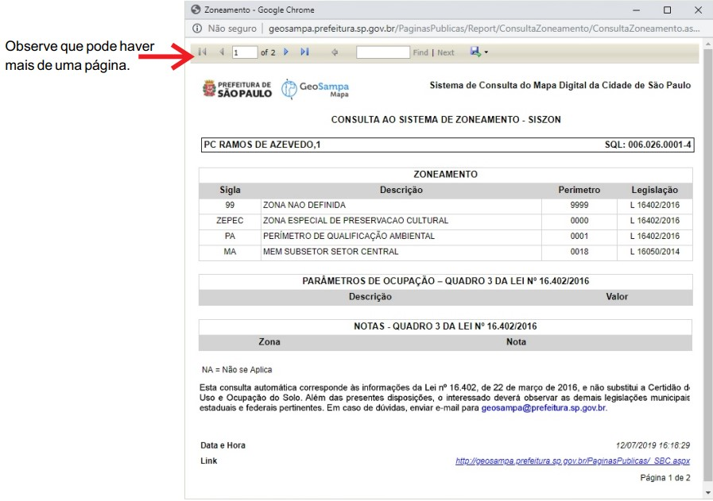

Orientações Gerais
Configurando o Ambiente
O Geosampa é compatível com os seguintes navegadores:
- Edge: versão 25 ou superior
- Firefox: 28 ou superior
- Google Chrome: 34 ou superior
- Internet Explorer: 9 ou superior
- Safari: 5 ou superior
Você poderá consultar essa orientação sempre que quiser clicando no botão  .
.
As informações são disponibilizadas em diversos sistemas de referência cartográfica:
| Datum | Projeção | EPSG |
|---|---|---|
| SAD69(96) | UTM 23 S | 5533 |
| SIRGAS 2000 | UTM 23 S | 31983 |
| SAD69(96) | GEOGRÁFICA | 5527 |
| SIRGAS 2000 | GEOGRÁFICA | 4674 |
| SIRGAS 2000 | GEOGRÁFICA | 4674 |
| WGS84 | UTM 23 S | 32723 |
Nota técnica : No GeoSampa são fornecidos arquivos tanto na projeção SAD69(96) como SIRGAS2000 e WGS84. A projeção em SAD69(96) é fornecida apenas em caráter de compatibilidade com bases antigas, visto que, em 2014, foi definida a projeção UTM/SIRGAS2000 (EPGS: 31983) como a nova referência para o Sistema Geodésico Brasileiro (SGB) e para o Sistema Cartográfico Nacional (SCN). Desde então são consideradas oficiais apenas as informações produzidas tendo o Sirgas2000 como sistema geodésico.
Verifique se seu bloqueador de “pop-up” está desativado. Caso contrário, alguns downloads podem ser bloqueados.
Para evitar possíveis erros, sugerimos realizar periodicamente a limpeza do cache do seu navegador. Para isso, basta acionar o atalho: Ctrl + Shift + Del.
O Geosampa permite visualizar os dados e informações diretamente no mapa digital da cidade(MDC) e/ou por meio de serviços on-line (WMS e WFS); permite também download de arquivos em diversos formatos e software.
Webservice: Para acessar dados por meio de serviço on-line (Webservice), utilize os links abaixo:
| Tipo do serviço | Link |
|---|---|
| WMS - Camadas | http://wms.geosampa.prefeitura.sp.gov.br/geoserver/geoportal/wms |
| WMS - Mapas Base | http://raster.geosampa.prefeitura.sp.gov.br/geoserver/geoportal/wms |
| WFS - Camadas | http://wfs.geosampa.prefeitura.sp.gov.br/geoserver/geoportal/wfs |
O Metadados (botão "Acessar Metadados") apresenta as características de todas as camadas existentes no Geosampa: denominação, descrição do conteúdo, escala, tipo de arquivo, órgão responsável, periodicidade de atualização, entre outras.
Dados abertos
O conteúdo do GeoSampa está disponível para download além dos
mapas articulados. Para fazer o download, clique no ícone  e escolha o tema de interesse e em seguida, os arquivos desejados.
e escolha o tema de interesse e em seguida, os arquivos desejados.
Alguns arquivos podem estar divididos por distritos (edificações, por exemplo) devido ao grande volume de dados. Lembre-se de verificar o local que serão armazenados os arquivos obtidos pelo download nas configurações de seu navegador.


Alguns deles estão disponíveis em mais de um formato. São eles:
| Portable Document Format):arquivo para visualização, contendo o mapeamento planialtimétrico do MDC; | |
| DXF | (Drawing Exchange Format):arquivo em formato CAD contendo o mapeamento planialtimétrico do MDC. Os arquivos estão divididos por folhas do Sistema Cartográfico Metropolitano (SCM), representadas como quadrículas no mapa; |
| DXF | MDT | arquivo em formato CAD,contendo o modelo digital do terreno, ou seja, altimetria doMDC representada por nuvem de pontos 3D; |
| SHP | (Shapefile); |
| KMZ | (Keyhole Markup Zipped) |
| XLS | CSV | planilhas de dados e séries históricas |
Acessar Metadados
Os metadados são as informações sobre cada uma das camadas, com o objetivo de proporcionar a correta utilização e interpretação dos dados.
Ao clicar no botão Acessar Metadados, localizado no canto superior direito, abrirá um arquivo com diversas planilhas (abas):
Consulta: planilha para consulta de metadados das camadas, sistemas e downloads.
Metadados: listagem de camadas, sistemas e downloads disponíveis, que esta vinculada a 1° planilha
Acessar Tutorial pelo Geosampa
Acesse o tutorial do Geosampa ao clicar no botão superior à direita, conforme indicado na figura a baixo.

Cursor
O cursor assume diferentes formas dependendo da sua função.
Abaixo seus formatos com as funcionalidades possíveis em cada um com exemplos práticos de aplicabilidade.

Seta
Permite escolher funcionalidades (botões, camadas etc) e navegação pelo mapa.
Mira
A partir a busca de informações e requer um ponto ou uma área no mapa.
Dedo
Seleção dentro de uma caixa de diálogo ou janela.

Quadrado
Aparece para medir distância, área e ângulo (não há aderência / atração / ímã); a precisão é limitada pela escala.

Cruz
Arrasta caixa de diálogo/janela.
Cursor de texto
Requer preenchimento de um campo.
Menu Camadas
Mapa Base
Você pode escolher um dos mapas base disponíveis como plano de fundo, sendo possível alterá-lo a qualquer momento durante sua navegação. Entretanto, é permitido visualizar apenas um por vez. Também pode-se deixar sem plano de fundo.
Camadas
Em camadas, está o conteúdo do mapa com as informações georreferenciadas de várias secretarias e órgãos públicos.
As camadas estão organizadas em grupos temáticos. Você poderá abrir o grupo clicando no botão + e habilitar a camada de interesse. Caso queira habilitar todas as camadas do grupo, poderá clicar apenas uma vez neste. Todas as camadas serão habilitadas automaticamente.
As informações de cada camada estão disponíveis no botão metadados. Este se encontra na parte superior direita, conforme imagem na página anterior.
Informações Sobre Camadas
Habilite, no menu à direita, as camadas das quais buscará mais informações.
Lembre-se que as informações somente aparecerão para as camadas habilitadas no menu. A seguir, clique no botão  e após,
no elemento de interesse no mapa
e após,
no elemento de interesse no mapa

Menu de Ferramentas
Informações
SQL - Setor-Quadra-Lote
Pesquisa
Por SQL
Setor quadra
A aba Setor-Quadra aproxima a visualização do lote, após o preenchimento das lacunas .
Licenciamento - sistema SLCe
O Sistema de Licenciamento Eletrônico de Construção é gerenciado pela Secretaria Municipal de Licenciamento e compila os seguintes processos:
I- Licenciamento de edificação nova ou reforma para os seguintes usos: Residências unifamiliares;
Casas geminadas;
Casas sobrepostas;
Usos não residenciais até 1.500 m² de área construída;
Estande de vendas;
Certificado de conclusão;
Grua;
Troca de responsabilidade técnica;
Tapume;
Comunicação de obras de emergência;
Desdobro e remembramento de lote;
Outras comunicações;
Alvarás de demolição;
Passo a passo:
- Primeiro, à esquerda, localize a ferramenta “Pesquisar”, selecione a aba ”Licenciamento” e preencha as informações de setor, quadra e lote, depois clique em “Listar”.
- Para obter um relatório em PDF, vá até “Documento Alvará SLCe”, clique em “Clique aqui para abrir”.
- Abrirá uma caixa de diálogo com as informações disponíveis no SLCe sobre ao SQL informado.
- Ao clicar no link “Clique aqui para abrir” o documento fica disponível para visualização e download.
SISZON-zoneamento
No botão Pesquisar , localize a aba Zoneamento e preencha Setor, Quadra e Lote.
O resultado apresenta: zoneamento, parâmetros de ocupação, quota
ambiental e notas - quadro 3 da lei n° 16.402/2016.

Clique em “Visualizar Impressão”, na parte superior direita, e obtenha um relatório formatado

Para saber mais informações sobre o zoneamento, observe a caixa “Mensagem” e vá no link “clique aqui”.
Consulta ao IPTU
Por endereço
Outras consultas disponíveis
Download de croquis e plantas
Para realizar o download você precisará, no MENU pesquisa, ativar a aba: "Área Pública/Planta". Então escolher entre as quatro opções para localizar e fazer o download dos documentos após habilitar a camada correspondente.
Estas camadas - Cadastro de Área Pública, Croqui Patrimonial e Área Cedida - estão no grupo Cadastro dentro do subgrupo Área Pública. A camada Utilidade Pública e Interesse Social (DIS / DUP ) está no grupo Utilidade Pública e Interesse Social.
Estas camadas - Área Urbanizada Regularizada - AU e Arruamento - ARR - estão no grupo Cadastro dentro do subgrupo Parcelamento.
![Imagem mostrando onde localizar, para cada tipo de download a camada referência ue precisa estar ativada.
Primeiro, se, localizar área pública: grupo Cadastro, subgrupo Área Pública, Cadastro de área pública.
Segundo, se, Localizar Croqui Patrimonial: grupo Cadastro, subgrupo Área Pública, Croqui Patrimonial.
Terceiro, se, área cedida: grupo Cadastro, subgrupo Área Pública, Área Cedida.
Quarto, se, Localizar Plantas DIS,DUP: grupo Legislação Urbana, subgrupo Bens Protegidos, Utilidades Públicas e Interesse](images/26_download_croquis_plantas.png)
Marco Geodésico
Para realizar o download você precisará, no MENU pesquisa, ativar a aba: "Marco Geodésico".
O Marco Geodésico é a terceira aba da janela de pesquisa e apresenta pontos fixos no terreno usados como referencial cartográfico.
- Primeiro,habilite a camada “Marco Geodésico”que esta em Meio físico/ Topografia.
- No mapa,identifique o marco próximo a área de seu interesse.
- Entre na ferramenta “pesquisar”, na aba Marco Geodésico” e preencha a lacuna “Número do pilar".
- Na caixa a baixo, aparecerá o número do pilar, novamente.
- Ao clicar o ponto estará centralizado na tela.
- Clique no ponto selecionado e mostrará a monografia do Marco Geodésico.
Download de imagens/MDC
Para realizar o download você precisará, no MENU pesquisa , ativar a aba: "Download de Imagens/MDC".
- Primeiro selecione o tipo de download de imagem desejado.
- Depois aperte em selecionar.
- Posicione o cursor do mouse na área de interesse e clique sobre o local desejado.
- A área do mapa articulado ficará destacada.
- Ao clicar na área em destaque ou no botão download, uma janela aparecerá com os arquivos disponíveis.
- Clique no nome do arquivo escolhido para abri-lo ou salvá-lo em seu computador.

Desenho e Medições
Calcular distâncias, área e ângulos
Ao clicar no botão o cursor estará habilitado para medir a distância entre pontos, a área de um polígono ou o ângulo entre dois segmentos.
- Escolha a opção desejada.
- Clique no ponto inicial e mova o cursor até o ponto seguinte.
- Com um clique, você continuará traçando um segundo segmento e assim por diante.
- Para encerrar a medição, dê dois cliques no último ponto.
Para obter área e ângulos deve-se seguir os mesmos procedimentos.
As distâncias de cada segmento traçado ficarão registradas nos trechos da medição e a área, no interior do polígono. O ângulo será dado somente em relação ao último e seguimento feito e o anterior a este.
O resultado da medição não tem caráter documental nem precisão.
Ferramenta de Desenho
Ao clicar na ferramenta de desenho  , uma janela será habilitada.
, uma janela será habilitada.

- Selecione o tipo de desenho que deseja inserir.
- Escolha a cor de sua preferência e, em seguida, insira o desenho no mapa.
- Seu desenho poderá ser movido ou editado utilizando as ferramentas da parte inferior da janela.
- Se desejar apagar apenas um dos elementos inseridos, clique no botão
e, em seguida, no desenho desejado.
Os desenhos inseridos ficarão ativos apenas durante cada seção de navegação. Caso feche o GeoSampa, ou desligue o navegador, os desenhos não serão salvos.
MDT (Modelo Digital do Terreno
Os arquivos estão em formato LAZ (LAS compactado) e podem ser usados para inúmeras aplicações com auxílio de diversos software. Com esses dados, por exemplo, a cratera e a cachoeira na zona sul da cidade ficam evidentes em imagens a baixo:
 Para acessar as bases MDT clique no ícone
Para acessar as bases MDT clique no ícone  LiDAR 3D. Na área de interesse, clique e arraste para selecionar as páginas.
LiDAR 3D. Na área de interesse, clique e arraste para selecionar as páginas.